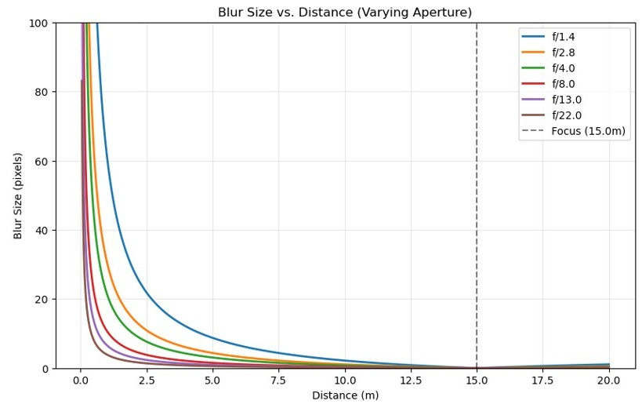
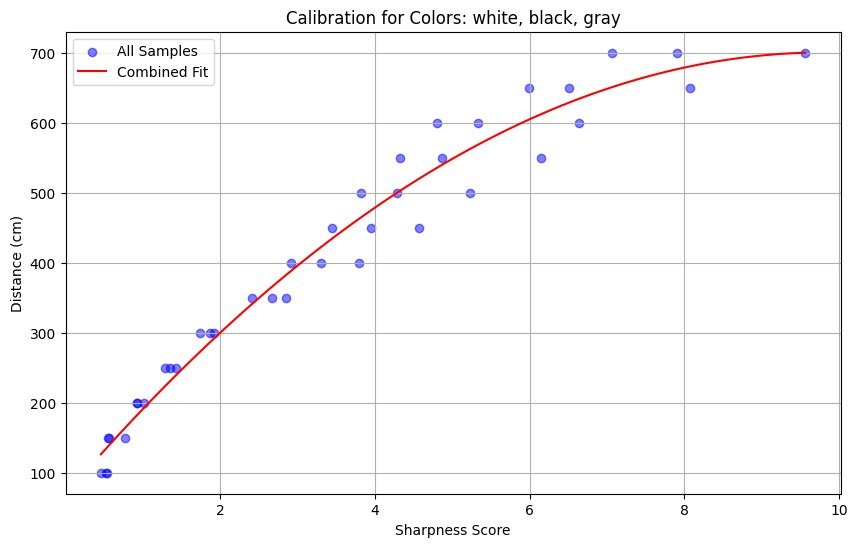
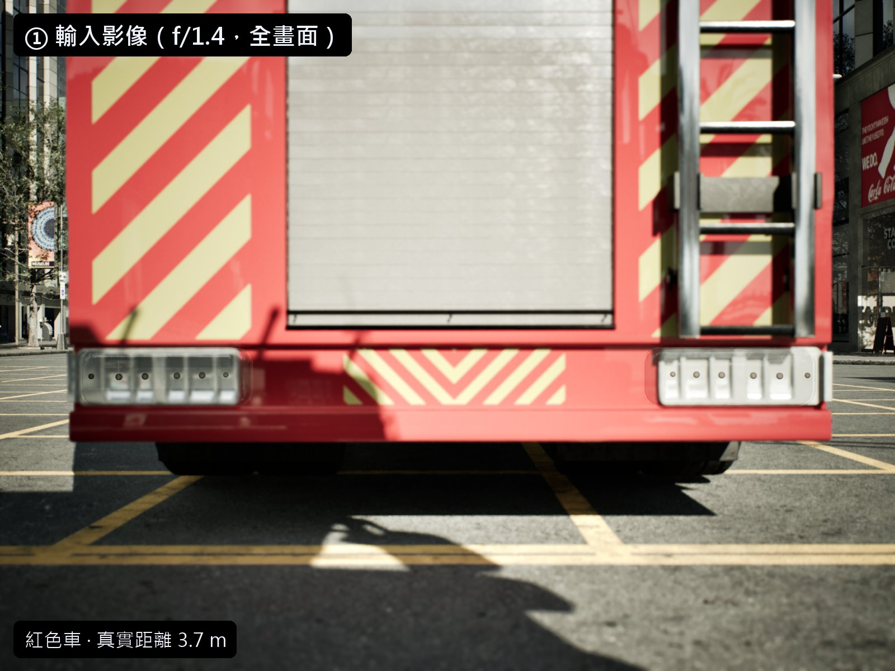

dual-aperture DFD ≥ 4.92 m
colors unseen in calibration
vertical image flip
(prior DFDS benchmark)
CARLA simulation, test distances 1.2–6.7 m. Real-capture result from the prior DFDS study (Chang et al., 2026).
Abstract
Monocular depth from defocus (DFD) estimates distance from blur with a single camera, which is low-cost and physically interpretable. In practice it suffers from background mixing, the near/far ambiguity on both sides of the focal plane, and grayscale sharpness that depends on object color. CA-DFDS addresses these with three steps: a segmentation mask restricts the blur measurement to the vehicle; the focal plane is placed behind the measuring range so a single image is unambiguous; and sharpness is computed from the CIECAM02 lightness and chroma channels, whose weights are optimized jointly with the calibration curve.
On the 20–110 cm real-capture benchmark inherited from DFDS, the mean RMSE is 10.30 cm, lower than STMAP, Depth Pro and UniDepthV2. In a 1–7 m CARLA vehicle scenario, red, green and blue vehicles — colors never used for calibration — reach 0.18–0.38 m RMSE, and the result changes by less than 0.001 m when the image is flipped.
Method

Core idea ① — focus behind the range
If the focal plane sits inside the range, objects in front of and behind it can show the same blur. Moving focus to 15 m makes blur change in one direction across 1–7 m, so one image is enough. Earlier dual-aperture DFD on the same scene had errors above 4.9 m; the back-focused single-shot design brings the white vehicle to 0.16 m.

Core idea ② — CIECAM02 perceptual sharpness
The masked image is converted to CIECAM02 lightness J and chroma components ac, bc. Their Laplacian responses are weighted and the standard deviation inside the mask is the sharpness σ.
optimized (wJ, wa, wb) = (0.8136, 0.1782, 0.0081), calibrated on white, gray and black vehicles


Results
CARLA, test distances 1.2–6.7 m. Calibration uses only white, gray and black vehicles; red, green and blue are unseen colors.
Sharpness measures across vehicle colors
| Sharpness measure | Red | Green | Blue | Black† |
|---|---|---|---|---|
| Grayscale Laplacian (white-calibrated) | 0.27 | 1.16 | 0.39 | — |
| CIECAM linear (0.6, 0.2, 0.2) | 0.34 | 0.51 | 1.21 | 1.06 |
| CIECAM linear (0.8, 0.1, 0.1) | 0.26 | 0.42 | 0.95 | 0.95 |
| CIECAM optimized weights (ours) | 0.24 | 0.18 | 0.38 | 0.52 |
RMSE in metres. † calibration color.
Near range, real captures (20–110 cm)
| RMSE (cm) | STMAP | Depth Pro | UniDepthV2 | CA-DFDS (ours) |
|---|---|---|---|---|
| Original | 39.47 | 184.36 | 324.15 | 10.30 |
| Rotated | 66.36 | 262.42 | 375.39 | 10.96 |
Benchmark and baselines from the prior DFDS study (Chang et al., 2026).
同一張影像，逐步拆解
選擇近、中、遠樣本，查看每一步如何把車身清晰度轉成距離。

此展示使用資料集手繪遮罩。數值與影像來自同一批既有推論輸出。
相機放在哪裡？查看拍攝配置與資料來源

40 mm 鏡頭、f/1.4、對焦 15 m，相機高度 0.8 m。側視與俯視為配置示意，影片為離散距離影像重播。
素材與數據來源 ↗ · 雲端素材 ↗Applications
Parking assist
While reversing or parking, a rear camera estimates the 1–7 m distance to the vehicle behind and warns the driver when it gets too close.
Warehouse AGVs & forklifts
A front camera on the vehicle estimates the distance to other vehicles and obstacles, so it can slow down or stop early inside aisles.
Low-speed campus shuttles
Autonomous shuttles on campuses and industrial parks keep a following distance with a single camera, reducing reliance on LiDAR.
Parking lot & yard monitoring
Existing CCTV estimates vehicle positions and gaps for space management and feeds the result into a digital-twin platform.
Deployment: one camera plus 13 known-distance images for calibration. Processing time 74.41 ms per image on an RTX 5080 host (grayscale-sharpness version, mask acquisition excluded).